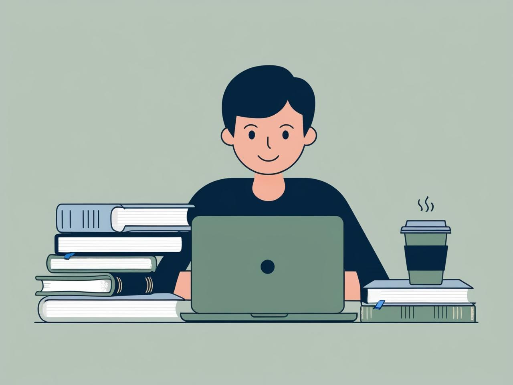

基本情報技術者試験 合格までの道のり

目次
- はじめに
- 基本情報技術者試験の概要
- 使用する学習コンテンツ
- A問題対策
- B問題対策
- 具体的な学習計画
- おまけ（自己流モチベーションキープ法）
- まとめ
はじめに
本記事では、基本情報技術者試験合格までの道のりを紹介します。IT初心者の私が、どのようにして学習を進め、試験対策を行っていく中での気づきや工夫、使用した教材や勉強法などを紹介していきます。これから受験する方のヒントになれば幸いです。
基本情報技術者試験の概要
基本情報技術者試験は、ITの基礎力を問う国家試験です。
情報処理推進機構（IPA）が実施しており、ITパスポートや情報セキュリティマネジメント試験よりも一段階レベルが高く、応用情報技術者試験の前段階に位置づけられています。
現在は CBT方式（Computer Based Testing） によって実施されており、全国のテストセンターで希望する日時を選んで受験できます。そのため、スケジュール調整の自由度が高くなりました。
ただし、受験のチャンスが増えた一方で、合格率は約25～30％前後と決して高くはなく、合格にはしっかりとした対策が求められます。
試験は A問題（選択式の知識問題） と B問題（アルゴリズム理解などの応用問題） の2部構成で、試験時間は合計約3時間30分にも及ぶ長丁場です。
特にB問題では、プログラミング、アルゴリズム、情報セキュリティなどをテーマにした長文問題が出題されます。これらは高度な読解力と、集中力の持続が問われるため、合否を左右する大きなポイントとなります。
使用する学習コンテンツ
試験に向けて使用している学習コンテンツを問題別に紹介します。
A問題対策
B問題対策
- 出るとこだけ！基本情報技術者

- アルゴリズム×擬似言語トレーニングブック

具体的な学習計画
最低でも 平日1時間、休日3時間 の学習時間を確保できる前提。
平日の学習スケジュール
- スキマ時間：過去問道場でA問題演習
- 0.5時間：YouTube視聴
休日の学習スケジュール
- B問題対策（プログラミング・計算問題）
- A問題の復習（集中力が切れたときの気分転換）
- YouTubeや共通テストの問題で理解を深める
自己流モチベーションキープ法
- 過去問道場の掲示板を見る: 合格者の体験談や勉強法を参考にする。
- SNSで資格取得を目指している仲間と交流する: 一緒に学習する仲間がいると継続しやすい。
まとめ
基本情報技術者試験の合格には、計画的な学習と適切な教材の活用が不可欠です。
- A問題対策: 過去問道場を中心に演習し、YouTubeやテキストで理解を深める。
- B問題対策: プログラミング問題を実際に手を動かして学習。
- 学習計画の実行: 平日2時間、休日4時間を確保し、スキマ時間を活用。
- モチベーション維持: 過去問道場の掲示板やSNSを活用。
1ヶ月間、計画的に学習すれば、基本情報技術者試験の合格は十分可能だと思います！一緒に頑張りましょう！